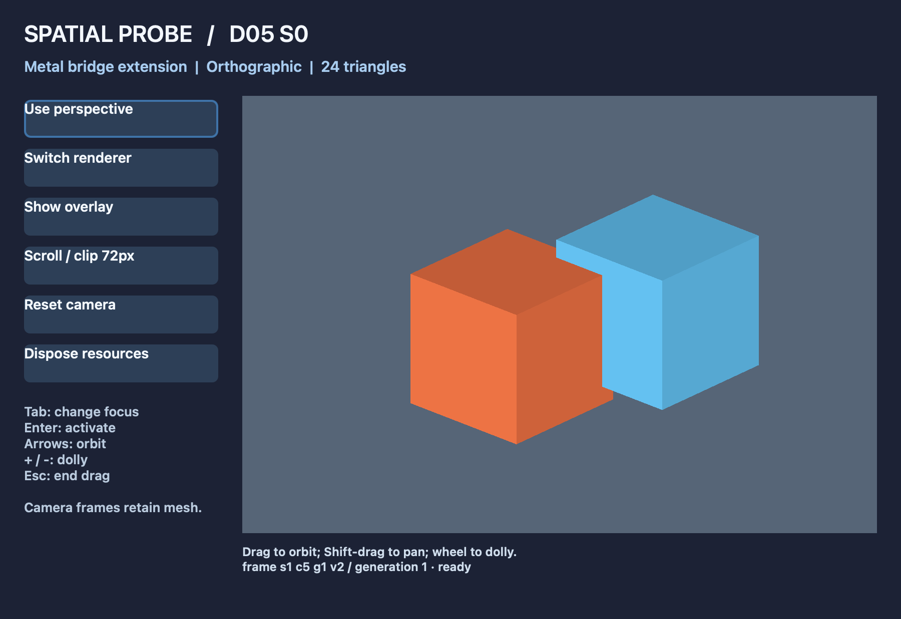
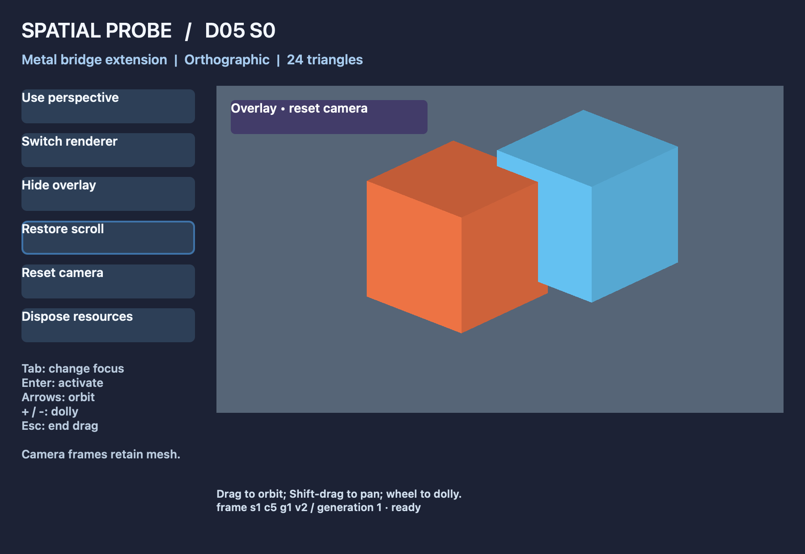
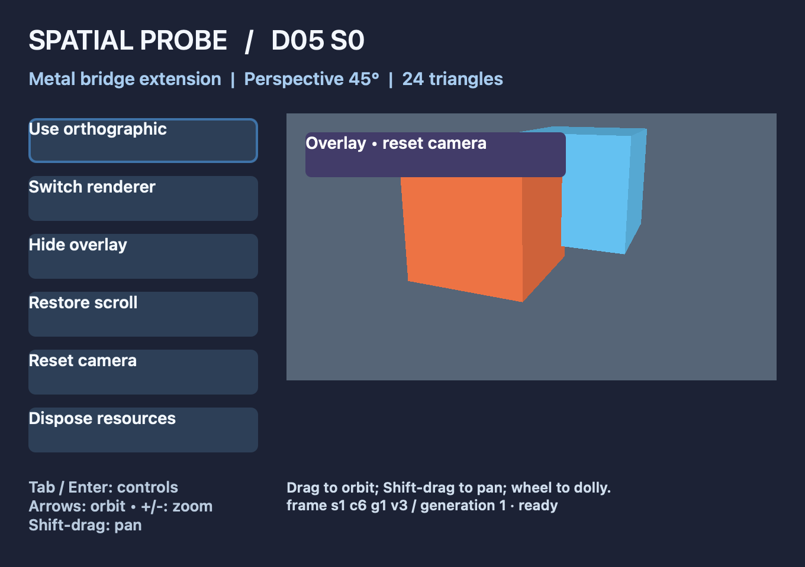
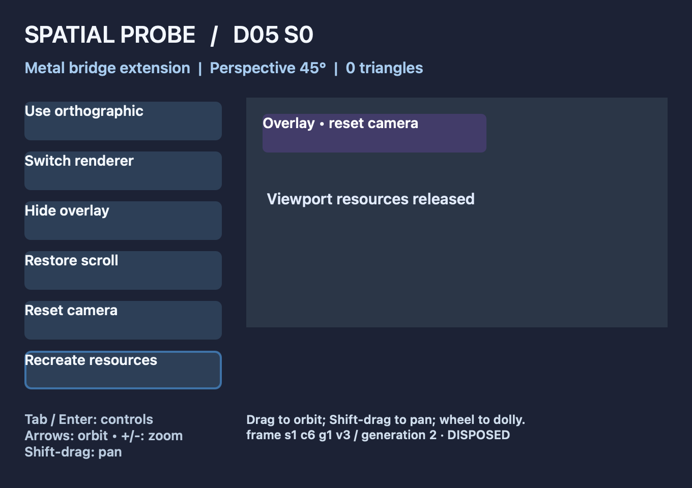
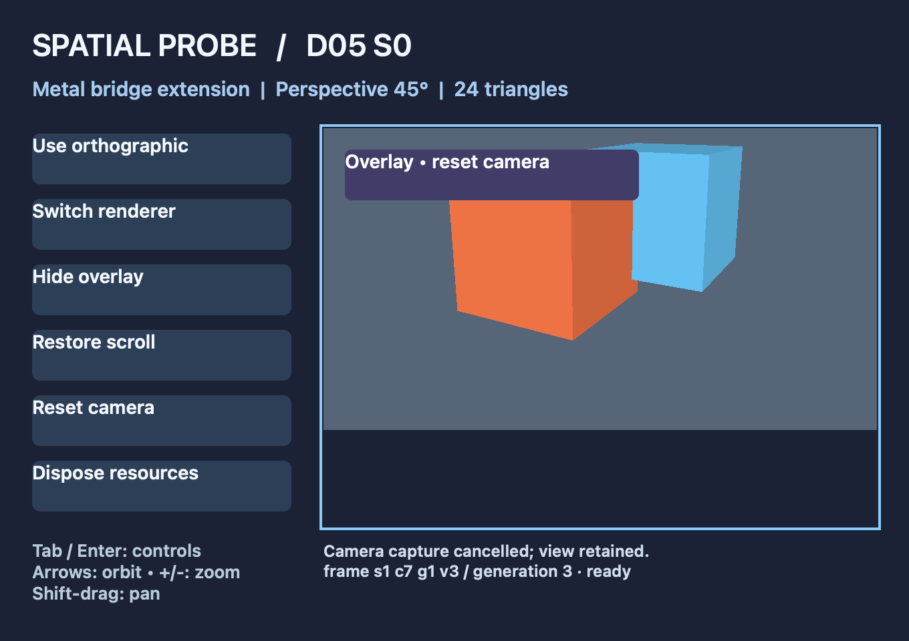
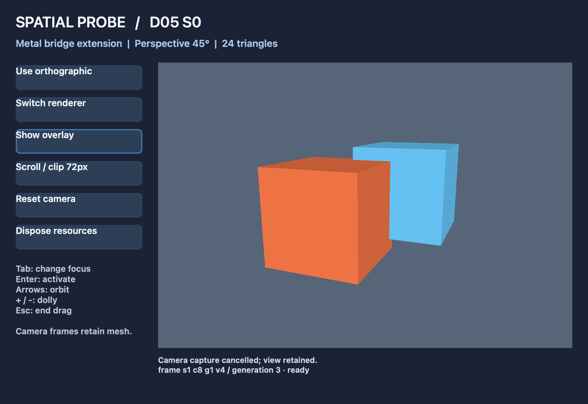
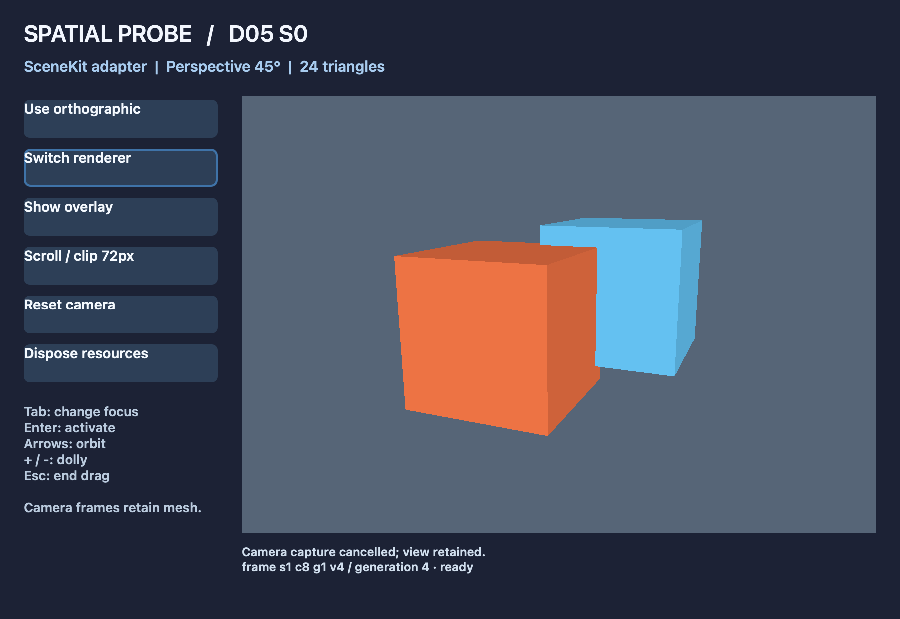
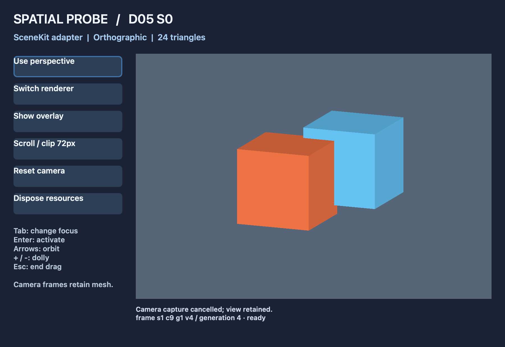
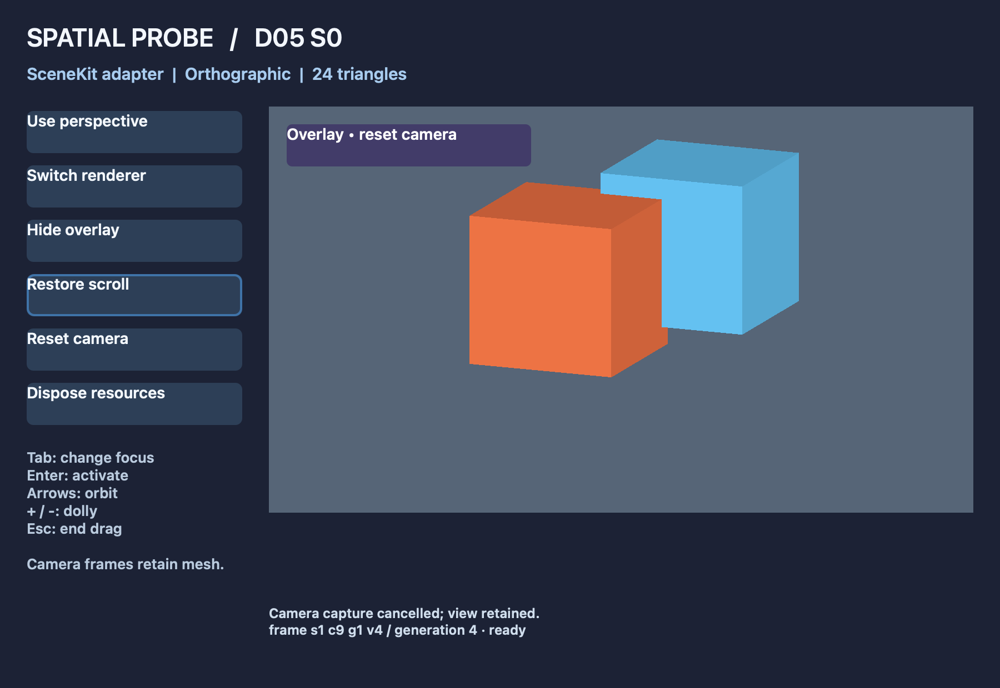

Pan and dolly Action: Deliver Shift-drag callbacks and a synthetic Moxi wheel packet Expected: Camera pans and moves closer without a mesh upload; wheel hardware is not tested
result · offscreen-render · 1800 × 1240 pixels

Bridge • orthographic Action: Click Use orthographic Expected: Parallel projection of the same retained geometry
result · offscreen-render · 1800 × 1240 pixels

Scroll, clip and overlay Action: Click Show overlay and Scroll / clip Expected: Image shifts up 72 logical points and clips; ordinary button remains above it
Keyboard focus in ordinary controls Action: Click overlay reset, then Tab from viewport to camera control Expected: Button focus ring; arrow input leaves camera unchanged
result · offscreen-render · 1800 × 1240 pixels

Narrow live window Action: Resize NSWindow content to 680 × 480 points Expected: Target pixel size follows viewport size and backing scale
result · offscreen-render · 1360 × 960 pixels

Viewport resources disposed Action: Click Dispose resources Expected: Scene removed; ordinary UI remains available; stale generation rejected
recovery · offscreen-render · 1360 × 960 pixels
New resource generation Action: Click Recreate resources Expected: Scene returns with retained camera and a new generation
recovery · offscreen-render · 1360 × 960 pixels

Cancel capture and restore camera focus Action: Open second owner, cancel first owner's drag with Escape, close second, press Right Expected: First owner camera responds; second owner's image identity was untouched
recovery · offscreen-render · 1360 × 960 pixels

Comparison • bridge Action: Restore wide layout and reset camera, clip and overlay Expected: Canonical perspective scene before renderer switch
result · offscreen-render · 1800 × 1240 pixels

Comparison • SceneKit Action: Click Switch renderer Expected: The same fixture through the actual SceneKit renderer
result · offscreen-render · 1800 × 1240 pixels

Adapter • orthographic Action: Click Use orthographic Expected: SceneKit camera uses shared view parameters
result · offscreen-render · 1800 × 1240 pixels

Adapter • host composition Action: Show overlay and scroll the SceneKit image Expected: Same host clipping and overlay path as the bridge
Adapter • recreated Action: Dispose and recreate the SceneKit adapter Expected: Scene restored under new resource generation
recovery · offscreen-render · 1800 × 1240 pixels
Contact sheetReproduce
python3 experiments/spatial-probe/gallery.py
Actual NSWindow content-view cacheDisplay captures of the Moxi native host. Native callbacks are scripted; excludes window chrome, compositor, physical input and scanout. Live content rendered offscreen via AppKit cacheDisplay; not a compositor screenshot. VoiceOver remains paused.
Screenshots show recorded states. They do not establish latency, scientific accuracy, physical IME, screen-reader behavior, or human usability.